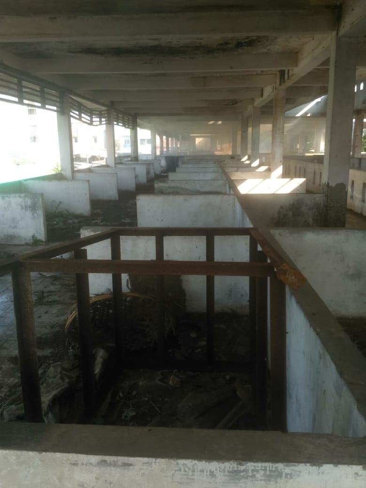
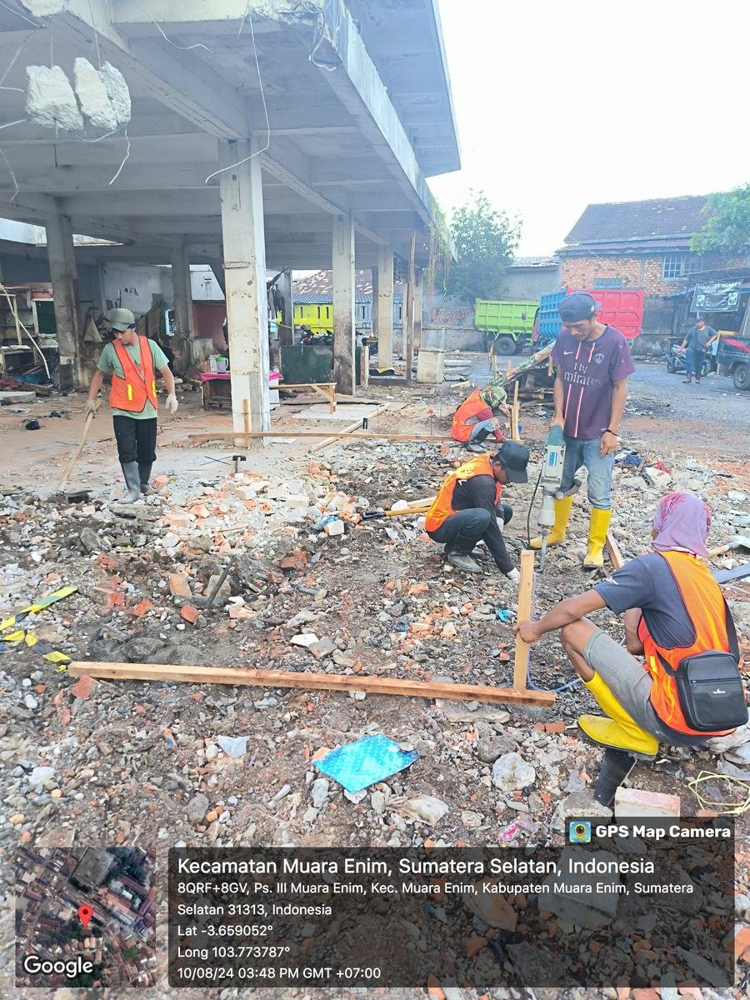
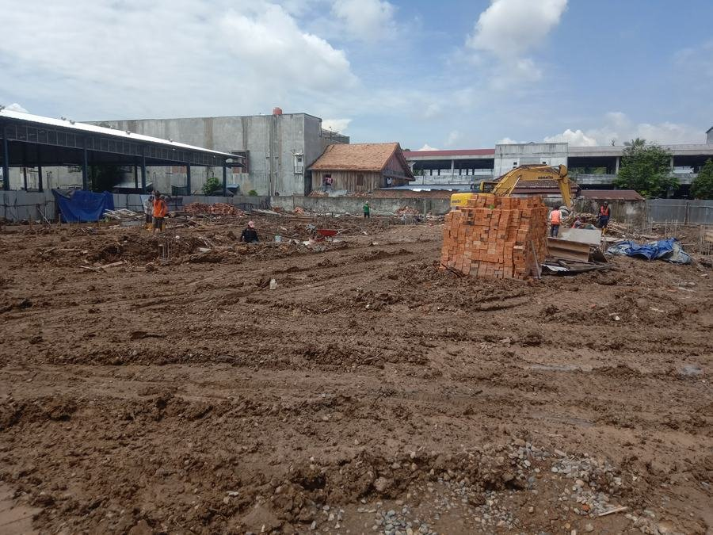
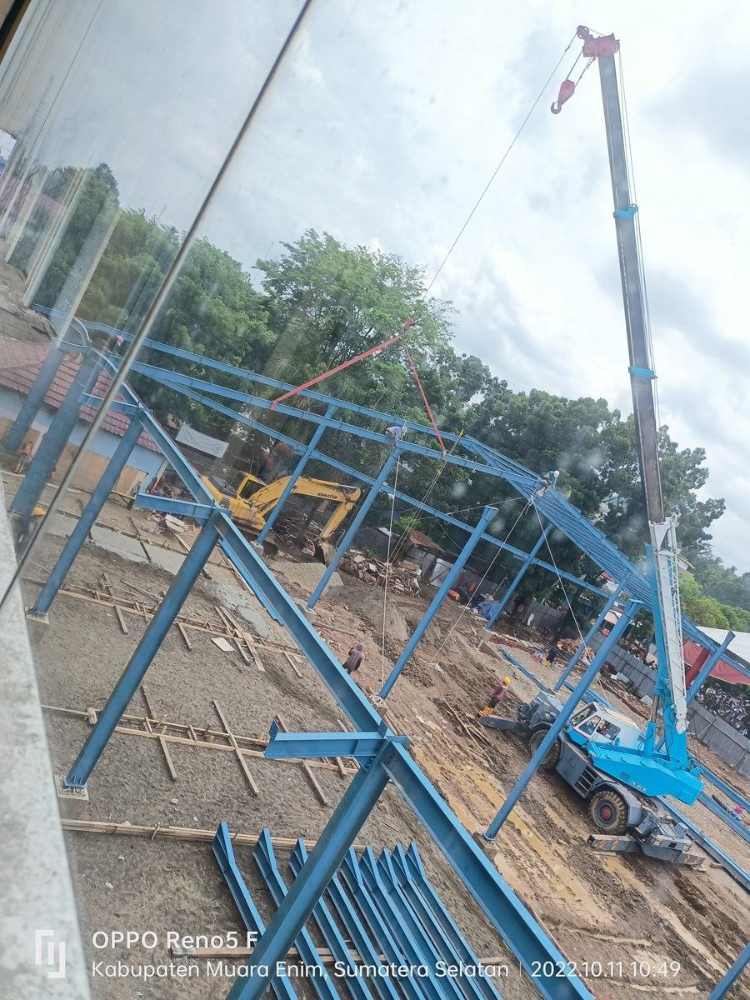
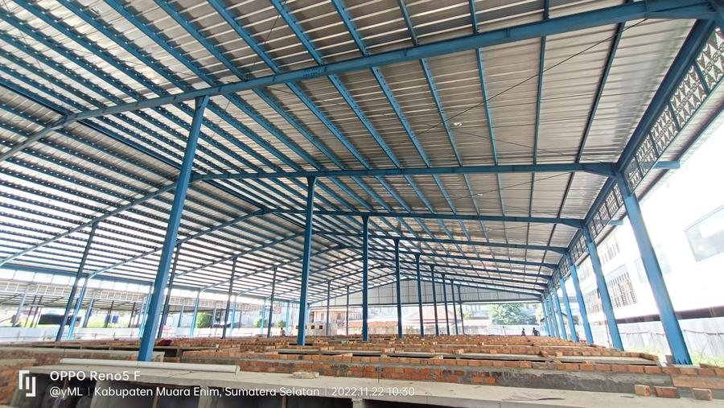

Sorotan Proyek
Pembangunan Pasar Blok D2, Muara Enim
Dari pembongkaran bangunan lama hingga pasar baru siap beroperasi — didokumentasikan langsung dari lapangan.

01 — Kondisi Awal
Bangunan pasar lama sebelum dibongkar

02 — Pembongkaran
Pembongkaran pondasi dengan jack hammer

03 — Persiapan Lahan
Pematangan lahan dengan alat berat

04 — Struktur
Persiapan besi tulangan

05 — Erection
Pemasangan kolom baja dengan mobile crane

06 — Atap
Erection rangka atap baja

07 — Finishing
Pembangunan dinding bata kios

08 — Rampung
Pasar Blok D2 siap beroperasi